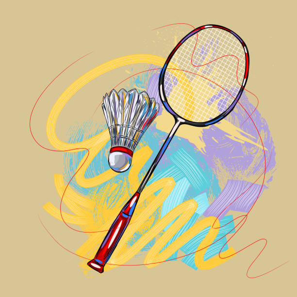

Welcome to my website! I'm Otniel Widyatmaka, and this is my personal website. Im 14 years old and I go to Academy For Software Engineering. I currently live in Queens and the only other boroughs Ive been to is Manhattan, which is where my school is located. I only recently got interested in coding and stuff like that, at school I studied python but Ill expand on that later on.
Where Im From
Im from Indonesia, which is located above Australia and below the Philippines. A fun fact about Indonesia is that is has about 17,500 islands, making it one of the largest archapelic states in the world. The culture there is less based on technology, most people there are Muslims but also have Christians and Buddhist. Its also very very hot over there because its right on the equator, and when I was there for vacation, there were also lots of flies.
Hobbies
I like to play games like Destiny 2 in my free time, sometimes I ride my bike around the park thats near my place. I used to play alot of badminton when I was younger with my dad and his friends, but over the years they've stopped playing so I also stopped playing. I realize that Ive not really went outside in past summers, so this summer Ive been trying to go out more, even if its only for a little.

Academics
Ive been doing very well in school since middle school, they have things called honor rolls and after every marking period, you would get a gold honor roll if you had an average grade of at least 95. If you had an average of 85 or 90 you would get a silver honor roll, I managed to get a gold honor roll on every marking period except one. As I mentioned before, I did Python 3 in school so if you want, you can check out my program here